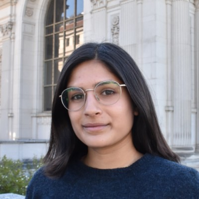
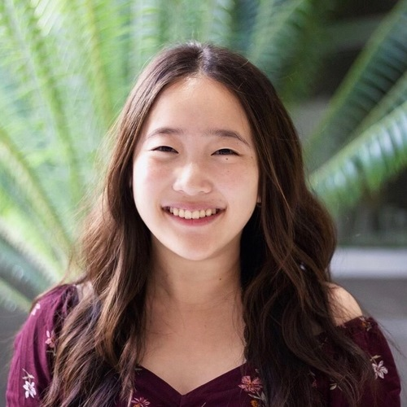
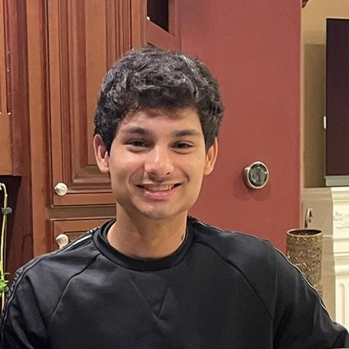
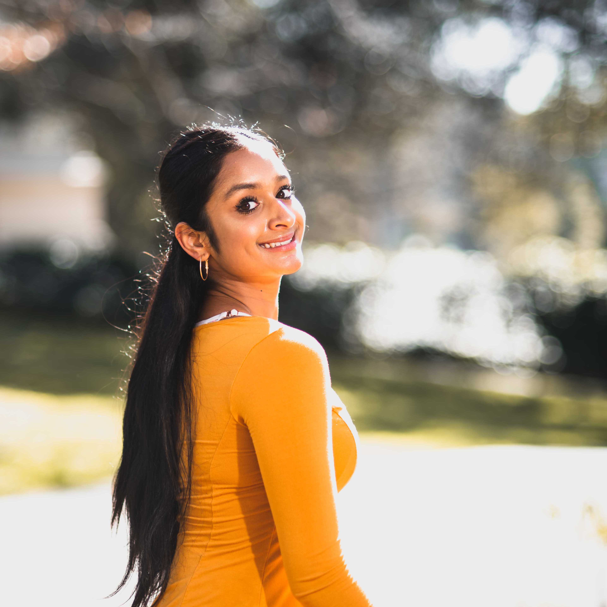

Staff
Instructors¶
Teaching Assistants ((u)GSIs)¶
|
Aarushi Karandikar (bio) Hi everyone! I'm a senior studying data science and this will be my third semester on staff. I love to read, explore food spots around Berkeley, and make entirely too many Spotify playlists. Looking forward to meeting y'all this semester!
aarushi.k@berkeley.edu
|
Alice Chen (bio) Hi everyone! My name is Alice, and I am a senior studying Economics and Data Science. Data 8 sparked my interest in the subject, so I am super excited to be teaching the course this semester! Other than data science, I am also a big fan of puzzles, trivia, movies, and sleeping.
alicechen295@berkeley.edu
|
Anna Zhao (bio) Hi, I'm Anna!! This lovely puppy is Nala, the best puppy along with my Pomsky-Shih Tzu mix, Cookie. Some things I love: acai bowls, Spotify playlists, pretty keyboards, and Data 8!
anna_zhao@berkeley.edu
|
Anuja Lohia (bio) Hi everyone! I'm a fourth year Computer Science major with a minor in Conservation and Resource Studies. Feel free to reach out to me if you want Netflix recommendations or to discuss Harry Potter/Brooklyn Nine-Nine/Data 8. Super pumped to meet you all let's have a great semester!
anujalohia@berkeley.edu
|
 Ashika Raghavan (bio) Hey everyone! I'm a senior from SoCal studying Anthropology and Linguistics, and minoring in Education. Outside of classes, I am involved with the campus yearbook (shoutout to Blue & Gold!) and enjoy binging tv shows, reading, and spending time with friends. I'm super excited to be returning for my third semester on staff for Data 8, and hope you all love the class as much as I do!
ashika-raghavan@berkeley.edu
|
 Carlos Ortiz (bio) Nice to meet you! I'm Carlos, a first-generation senior majoring in Data Science. I'm passionate about creating data-driven applications to connect and empower communities. Let's talk about dogs and coffee! :)
carlosortiz@berkeley.edu
|
 Ciara Acosta (bio) Hi guys! I'm a third year majoring in data science and econ. This is my first sem as a uGSI but not my first time with Data Scholars, so I'm super excited to get to know y'all! ü•≥ In my free time, catch me grabbing boba, playing tennis, or napping under the Campanile!
ciara.acosta@berkeley.edu
|
Devarsh Dhanuka (bio) Hi everyone! I am a Senior majoring in CS and Economics and this is my second semester as a uGSI. Data 8 has been one of my favorite classes at Cal and I hope you all love it as much as I did! In my free time, I love watching sports (I'm a huge Chelsea fan), binge-watching HIMYM and Friends, and playing FIFA with my friends.
devarshdhanuka@berkeley.edu
|
|
Eddie Liu (bio) My name is Eddie, and I’m a junior studying Business Administration and Data Science. In my free time, you can find me playing Spikeball on Memorial Glade or basketball at Clark Kerr, yelling at TV screens in support of my favorite sports teams, or rocking out to some EDM or rap. Fun fact: I’m from Overland Park, Kansas!
efliu@berkeley.edu
|
Ellen Kwok (bio) Hi! I am a senior studying data science and cognitive science. In my free time, I enjoy making art and attempting to cook. This is my fourth semester on staff and I am excited to meet all of you!
ellenkwok882@berkeley.edu
|
Ellen Persson (bio) Hi everyone! I'm Ellen, and I'm really looking forward to my seventh semester teaching Data 8. When not playing around with Python, I enjoy playing Ultimate Frisbee, hiking in the Berkeley hills, and playing Pokemon Go. Feel free to email me if you have any questions about campus - as a Bay Area native, I'm always happy to meet new people and show them the secrets of Berkeley!
nellepersson@berkeley.edu
|
 Emily Guo (bio) Hey! I'm a junior studying Data Science and Economics. In my free time, I like to travel, listen to music, and watch YouTube videos. Looking forward to meeting you all!
lingjunguo@berkeley.edu
|
 Eshaan Soman (bio) Beep. Boop. Data 8.
eshaansoman@berkeley.edu
|
Grace Altree (bio) Hi everyone, I’m Grace! I’m a senior studying Data Science and Cognitive Science. Apart from Data 8, I love to dance, spend time at Stinson Beach, hike, and read on the Glade. Looking forward to a great semester with you all!
gracealtree@berkeley.edu
|
Grace Yi (bio) Hi! I'm Grace, a third year CS major from Union City, CA. I enjoy taking naps, binging dramas and listening to music as an escape from reality. I'm super excited to be teaching Data8 this semester and I hope you all will have an amazing experience!
graceyi89@berkeley.edu
|
|
 Jacqueline Yu (bio) Hello! I'm a fourth year from the East Bay Area studying data science with an emphasis in cognition. In my free time, I often can be found recommending new Trader Joe's products to my friends, drinking passion fruit green tea w/ lychee jelly, laughing at dog memes, and secretly watching bad reality TV shows. Excited to meet you all this fall! :)
jacquelinekyu@berkeley.edu
|
Josh Greenberg (bio) I am a senior studying Business Administration and minoring in Data Science. In my free time, I love to ski, hike, travel, and spend time with friends and family. Data 8 has been one of my favorite classes at Berkeley, and I am looking forward to a great semester!
joshgreenberg@berkeley.edu
|
 Joyce Zheng (bio) Hi everyone! I'm a senior from Naperville, Illinois (suburb of Chicago!) studying Data Science and Public Health. In my free time, I love to explore new foodie places, bullet journal, and go on spontaneous trips with my friends (twin peaks at 2am, anyone?). I'm super excited to meet all of you this semester!
joyceezheng@berkeley.edu
|
Kanchana Samala (bio) I am an upcoming junior(she/her) studying Data Science and pursuing the Calteach minor. I am part of SKY Campus Happiness Club at Berkeley and I meditate daily. I love listening to music and watching Turkish TV shows. I am available to listen and talk about anything, please feel free to reach out!
kanchoo@berkeley.edu
|
|
Laeticia Yang (bio) Hi everyone! I'm a third year majoring in data science and business. I'm from the South Bay and in my free time I like to journal, paint, explore nature (I really love redwood trees), and go to great lengths to see a pretty view. I'm super excited to be a UGSI this semester and can't wait to meet you all!
laeticiayang@berkeley.edu
|
 Margaret Misyutina (bio) Hi everyone! I'm a senior from San Diego majoring in Data Science and minoring in Computer Science. I absolutely LOVE teaching Data 8; this is my 7th semester on staff! In my free time I enjoy exploring SF, watching sunsets, petting cats, and making smoothies :)
marmis@berkeley.edu
|
Matt Moon (bio) Hey everyone! I'm a fourth year studying data science + stats originally from SoCal. At any given time, you can probably find me wasting my money on U-Cha, TP Tea, or Seoul Hot Dog. I also give tours so witness me screaming Berkeley facts at the top of my lungs. Excited to meet y'all!
sjmoon21@berkeley.edu
|
Meghan Wang (bio) Hi everyone! I'm a senior studying Industrial Engineering and Operations Research and can't wait to be back on campus for my final year. I'm originally from SoCal but have loved exploring the Bay Area! Outside of classes, I enjoy sewing, re-watching Marvel movies, and making friends karaoke with me.
meghanwang@berkeley.edu
|
|
Melissa Wong (bio) Hi!!! I'm a fourth year studying Computer and Data Science, and I'm so excited to be a uGSI for the Fall 2021 semester! I'm originally from LA and I love talking Marvel, design, doggos, and web dev. If you read this, ask me about my blanket fort!
melissarwong@berkeley.edu
|
Michelle Lou (bio) Hi! I'm Michelle and I'm a senior studying Data Science with an emphasis on inequalities in society. In my free time I enjoy exploring new places around the Bay, drinking way too much coffee, and making Spotify playlists. Data 8 has been my favorite class at Cal and I'm looking forward to meeting you all :)
michellelou@berkeley.edu
|
 Nick Ha (bio) Hi everyone! I'm a senior cs major from Orange County, CA. I really enjoy binge-watching tv shows and going on late night food runs. Looking forward to a great semester!
nickha@berkeley.edu
|
Nicole Park (bio) Hi! I'm a third year double majoring in Data Science and Economics. When I'm not in school, I enjoy live music (concerts, musicals, etc.), in-theater movies, and grocery shopping. Looking forward to an awesome semester!
nicolepark@berkeley.edu
|
|

Noor Hanafi (bio) Hi! I'm a senior studying Economics and Data Science. In my free time, I enjoy traveling, trying new restaurants, and taking long walks while listening to a good podcast. I can't wait to meet all of you this semester!
nhanafi@berkeley.edu
|
Olivia Chang (bio) Hi there! I'm a senior studying Statistics and Data Science originally from the Malibu area! I love hiking with my Goldendoodle Harley, eating at new restaurants, and traveling around the Bay Area. Super excited to get to know you this fall :)
o.chang@berkeley.edu
|
 Oscar Bjorkman (bio) Looking forward to seeing everyone *in person*. Stalk me on my website :)
oscarb@berkeley.edu
|
Padma Venkatraman (bio) Hello :) I'm Padma, a junior majoring in Data Science and Astrophysics. I took Data 8 in my first semester and have worked with the course ever since. Data 8 made me want to pursue Data Science further so I hope you will grow to love it as much as I do! I also love to read, discover new playlists on Spotify and try new cafes at Berkeley ~ I hope to see you around sometime and let's have a great Fa21!
vpadma@berkeley.edu
|
|
Raymond Lui (bio) I'm a third year student from San Francisco majoring in EECS with a minor in Data Science (which I added after taking Data 8!) This is my third semester on course staff, but maybe it'll be my first semester teaching in-person? If this is your first time on campus, you should try out both Sliver and Cheeseboard, then email nellepersson@berkeley.edu your preferred spot!
ralui@berkeley.edu
|
Raymond Wang (bio) Doctors say the human body is about 70% water, my doctor says I’m 70% jasmine tea. Hi, I really like jasmine tea, pandas (the animal) and neuroscience. Looking forward to having a glorious purpose, I mean, a fantastic semester together.
raymondwang@berkeley.edu
|
Rebecca Hu (bio) Hi! I'm a third-year studying Business Administration and Computer Science. My hobbies include swimming, tennis, reading, cooking, and hiking. Data 8 is one of my favorite classes, and I'm really looking forward to meeting and teaching everyone this fall!
rhu01@berkeley.edu
|
 Rita Wang (bio) Hello! I am a rising fourth year studying Data Science and Computer Science and I am super excited to meet all of you over the summer! In my free time I like to explore photography and videotography. My goal for life is to travel every year and witness what nature has to offer!
ritawang@berkeley.edu
|
|

Selena Lu (bio) Hi everyone! I’m a senior from Los Angeles studying Data Science and Public Health. In my free time, I love watching dramas, trying new food and boba places, and going on spontaneous trips. I’m super excited to be on staff this semester and I’m looking forward to meeting you all!
selenalu@berkeley.edu
|
Shayan Ghosh (bio) Hi! I'm a third year studying Data and Computer Science with a minor in City Planning. I'm from Sacramento and in my free time enjoy drumming, knitting, exploring Berkeley, and public transit. I'm excited to work with everyone this semester!
shayan.ghosh@berkeley.edu
|
 Stephanie Djajadi (bio) Hello! I'm a senior studying CS from SoCal. I love dogs, good food, and watching sunsets. Data 8 has been one of my favorite classes so far, and I'm looking forward to meeting everyone!
sdjajadi@berkeley.edu
|
Stephanie Xiao (bio) Hii, I'm a third-year majoring in CS from San Jose, CA! I love going out to get food, taking pictures of food, and eating food. HMU with your best recs \(^ヮ^)/
stephaniex@berkeley.edu
|
 Sunny Shen (bio) One last year for my favorite class!!
sunnyshen@berkeley.edu
|
Sydnie Zanone (bio) Hi! I'm Sydnie, a senior from San Jose majoring in computer science. In my free time I like to crochet, update my Goodreads bookshelves, and try out new restaurants in Berkeley. Looking forward to meeting all of you this semester!
sydniezanone@berkeley.edu
|
 Takao Kakegawa (bio) Hi everyone! I'm was born in Japan but grew up in Hong Kong. I'm a senior majoring in Applied Mathematics and Statistics. Looking forward to meeting you all this semester!
takaokakegawa@berkeley.edu
|
 Tong Shen (bio) Hi! I'm Tong, a senior majoring in Data Science and Economics. Data 8 is an amazing class and I hope you'll love it! Feel free to ask me anything!
tongshen@berkeley.edu
|
|
Varun Jadia (bio) Hi! I'm a senior studying Economics and Computer Science, with a keen interest in all things Data Science and ML. I took Data 8 my first semester here at Cal and had a great experience, looking forward to meeting you all!
jvarun@berkeley.edu
|
 Wendy Kim (bio) Hi everyone! I'm Wendy, a third year from Irvine studying Data Science. I love oat milk, night drives, and Data 8 of course. :) Excited to meet you all this semester!
wendykimm@berkeley.edu
|
Will Furtado (bio) Hey everyone, my name is Will and I'm a Junior from Massachusetts studying Applied Math and CS. When in Berkeley, you'll likely find me fueling my caffeine addiction at Strada or tracking my runs through the Berkeley Hills. Extra credit (not really) if you can find my song on Spotify ;)
willfurtado@berkeley.edu
|
Yuqi Ye (bio) Hi bears! My name is Yuqi and I am a junior majoring in Business and Data Science. I LOVE teaching Data 8 and this is my fourth semester on staff! In my free time I enjoy singing and practicing Kpop dance. Looking forward to meeting you!
yuqiye@berkeley.edu
|

Tutors¶
|
Angeline Yang (bio) Hello! I'm currently a third-year studying Cognitive Science. I come from Beijing, China, and I took Data 8 in my first year here at Cal. This will be my third semester as part of Data 8 staff. Excited for a great semester with you all!
angelineyang@berkeley.edu
|
 Atticus Ginsborg (bio) Hi! I'm Atticus and I'm Sophomore studying Data Science and Economics. In my free time I love watching and playing all sports (especially chess), reading, and watching youtube. I really enjoyed Data8 when I took the course and am looking forward to an awesome semester!
atticus.ginsborg@berkeley.edu
|
Audrey Im (bio) Hey everyone! I'm Audrey, and I’m a sophomore majoring in both computer science and data science. Data 8 is one of my favorite Berkeley courses (if not, the most), and I’m so excited to help you all dip your feet into the field of data science. I'm obsessed with all things Arctic Monkeys, the Neighbourhood, and anime. Hit me up if you want to talk about anything at all!
audreyim@berkeley.edu
|
Aurora Zeng (bio) Hello! I'm a boba-consuming junior from Los Angeles studying Data Science with an emphasis in business. I love art, listening to kpop, and talking about my chonky pet cat. Data8 is one of my favorite courses at Cal, I hope you'll enjoy this class too!
auroraxzeng@berkeley.edu
|
 Carter Sun (bio) Hey everyone, I'm a junior studying economics and data science, and I enjoyed taking Data 8 as my first exposure to data science! In my free time, I like playing/watching basketball and just relaxing with some YouTube. Looking forward to meeting everyone!
csun457@berkeley.edu
|
 Devin Sze (bio) Hi yall, my name's Devin. I'm a sophomore studying cs and ds, in my free time I like playing Minecraft and doing gRaPhiC dEsIgN. Super excited to meet yall ❤️❤️❤️
devin.sze@berkeley.edu
|
Diana Qing (bio) Hi! I'm Diana and I'm a sophomore majoring in Computer Science and minoring in Public Policy. Data 8 was one of my favorite classes, and I'm excited to get to know everyone better this semester!
dianaqing@berkeley.edu
|
Donny Li (bio) Hellllo! I am Donny Li, a sophomore majoring in Computer Science. I love coding, video games, and of course teaching! Great to meet you all!
geli2001@berkeley.edu
|
|
Elleanor Wong (bio) Hi, I'm a third year majoring in data science. I'm also interested in health and love to eat!
elleanor.wong@berkeley.edu
|
Eunice Choi (bio) Hi everyone! I’m a junior majoring in Data Science and Sociology. Excited to meet you all <3
eunicechoi@berkeley.edu
|
 Haru Yamamoto (bio) Hey guys! My name is Haru Yamamoto, and I am a rising junior studying Molecular and Cell Biology, with a minor in data science. I'm from Yokohama, Japan and Greenwood, IN. Data 8 was one of the first data science courses I ever took and my first exposure to programming, so I'm excited to help you through this course as well!
haru.yamamoto@berkeley.edu
|
James Weichert (bio) My name is James Weichert (he/him), I'm a junior majoring in computer science and data science, and I'm a tutor for Data 8! Outside of classes, I'm also the Academic Affairs Vice President for the ASUC and a member of the Student Technology Council. You can usually find me in Moffitt Library or spending too much money on chicken tenders at the Golden Bear Cafe.
jweichert@berkeley.edu
|
|
Jessica Qian (bio) Hey y'all! I'm a 3rd year studying Data Science, Computer Science, and Japanese. Outside of classes, I love singing, art, cooking, and clouds. I hope you have a great time in Data 8, and I'm looking forward to meeting everyone this semester!
jaqian@berkeley.edu
|
Joanna Yoo (bio) Hi everyone! I'm Joanna and I'm a junior studying data science. I'm originally from Seattle and love anything related to food! Looking forward to meeting you all!
joannayoo@berkeley.edu
|
Joshua Alvarez (bio) Hi everyone! My name is Josh and I'm a fourth year from LA studying data science. In my free time I like to surf, watch boxing, and listen to jazz. I'm looking forward to meeting y'all this fall! üï∫üï∫üï∫
cayanan.joshua@berkeley.edu
|
Kaitlyn Phan (bio) Hello! My name is Kaitlyn, and I am a sophomore majoring in Economics and Data Science. In my free time, I like hiking, working on random art projects, and baking. Excited to meet you soon!
kaitlynphan@berkeley.edu
|
|
Karen Li (bio) Hello! I'm a third year majoring in Public Health. I'm a Bay Area native and in my free time I love to watch Netflix, get boba or food with friends, or listen to music (I love anything from Korean R&B; to soft pop!). So excited to meet you all this semester!
karen.li@berkeley.edu
|
Katherine Ma (bio) Hi! I'm Katherine, a third year majoring in MCB and minoring in Data Science. I love cooking, napping, and painting shoes. Can't wait to meet you all! :)
katherine0806@berkeley.edu
|
Kinsey Long (bio) Hi all! I'm Kinsey, a 3rd year from Hong Kong majoring in Chemical Biology and minoring in Data Science and Bioengineering. Come talk to me about music, politics, food, board games, or anything cool!
kinsey.long@berkeley.edu
|
Lillian Weng (bio) Hi! My name is Lillian, and I'm a sophomore from the Bay Area hoping to study CS. Data 8 has been my favorite class at Cal, so I'm very excited to be on staff this semester!
lillianweng@berkeley.edu
|
|
Mark Cheung (bio) Hi, I'm Mark! I'm a 3rd year studying data science from southern California. I like basketball, playing guitar and bass, and chess.
markcheunggg@berkeley.edu
|
Massimiliano (Max) Lucas (bio) Hi everyone! I'm a third year from Sunnyvale, CA doubling in IEOR and Data Science. On campus I'm part of the UC Rally Committee, and I love surfing, windsurfing, climbing, and listening to random podcasts. Super stoked for this semester, and I hope to see you in class (or at a football game)!
mlucas@berkeley.edu
|
Matthew Shen (bio) Hi! I'm Matthew and I'm a sophomore studying Computer Science and Data Science. In my free time, I like to enjoy nature, the ocean, and sports (go patriots and warriors!). Looking forward to this semester and meeting you all!
mattyshen@berkeley.edu
|
Mira Sharma (bio) Hi everyone! I'm a second year studying computer science, and I love reading sci-fi, eating fried rice, and going on runs. Super excited to meet you all!
mirasharma@berkeley.edu
|
|
Nikaash Maheshwari (bio) Table().with_columns("Hometown", "Boulder".
nikaash.maheshwari@berkeley.edu
|
 Noah Tran (bio) Hi all, I'm Noah! I'm a big fan of Parks and Rec, stationery, figure skating, and Data 8. Excited to work with everyone!
noah.s.tran@berkeley.edu
|
Oswaldo Pastor (bio) Hi everyone! I'm a third year international student from Peru majoring in Civil Engineering (and hopefully minoring in DS). On my free time I enjoy playing basketball and practicing jazz improv. D8 has been my favorite class at Cal and I'm really excited to be a tutor in it this semester!
oswaldo1603@berkeley.edu
|
Owen Sleigh (bio) Hi! My names Owen, I took Data 8 fall 2019 and I’m a third year applied math and computer science major from San Diego. When I’m not Data8ing I like to bake and spend time outdoors
owensleigh@berkeley.edu
|
|
Peter Valverde (bio) Welcome to my bio. I like hiking, running, and lifting. Hope you have a nice day!
pverde1@berkeley.edu
|
 Prasann Guruprasad (bio) Hi everyone! I am a junior from Bangalore, India studying economics and statistics. Outside of class, I am a huge soccer fan (brownie points if you call it 'football') and I support Bayern Munich.
gprasann@berkeley.edu
|

Rishabh Goel (bio) I am an MCB and Business major and am in my senior year. I my leisure time I enjoy listening to music, reading, and watching tv shows.
rishabh297@berkeley.edu
|
Rithvik Sunku (bio) I'm a third year studying Data Science and Economics. In my free time, I love checking out new food spots, going on day trips, doing photography, and watching sports (Go A's!). Look forward to meeting y'all this semester!
rithviksunku@berkeley.edu
|
|
Ryan Huntley (bio) I am a junior EECS major interested in machine learning and scientific computing. In my free time, I enjoy playing spikeball, watching movies, walking throughout Berkeley, and playing board games.
ryanhuntley23@berkeley.edu
|
Sabrina Ma (bio) Helloooo! I'm a sophomore studying CS and business from Fremont. I like taking long naps, trying the same type of milk tea from every single Berkeley boba shop (for taste test purposes), and doing mini crosswords :)
sabrinakma@berkeley.edu
|
Sahil Thakur (bio) Hello everyone! I'm a currently a third-year CS major from Tracy. In my free time I enjoy playing racquetball, making random things out of paper, sleeping, and playing league. Feel free to reach out about anything and excited to meet you all in the Fall :D
sahilthakur@berkeley.edu
|
Sara Fang (bio) Hi everyone! I'm a third-year from the Los Angeles area studying data science and computer science. I love music, art, photography, food, and fashion, as well as spending quality time with my friends.
sarafang@berkeley.edu
|
|
Sean Wei (bio) Hey, everyone! I'm a third-year data science student from San Diego, California. In my free time, I love to scroll through TikTok and argue about sports, nerdy movies, and funny TV shows with my friends.
seanwei2001@berkeley.edu
|
Sofia Kwee (bio) I am a third year studying data science with a concentration in computational biology. I am from San Diego and I love to spend time outside and play tennis.
sofiakwee@berkeley.edu
|
 Sonya Kiskachi (bio) Hey everyone! I'm Sonya, and I'm a junior studying Data Science and minoring in Geospatial Science from the Orange County area. Excited to meet everyone this semester :)
sonyak@berkeley.edu
|

Sonya Shankar (bio) Hello! My name is Sonya Shankar, and I am a rising junior studying cognitive science with a minor in dance and performance studies. Aside from school, I am a competitive dancer, and I also love to work out at the gym and hike in my free time. Data 8 has definitely been one of my favorite courses that I have taken at Cal, and I hope it becomes yours too :) looking forward to a great semester with you all!
sonyashankar@berkeley.edu
|
|
Tanya Sarkin Jain (bio) I am a Junior studying biology and computer science.
tanyasjain@berkeley.edu
|
 Umut Uygur (bio) Hey there! I am Umut and I'm from Istanbul, Turkey. I am majoring in Industrial Engineering and Operations Research. I love skiing!
umutuygur@berkeley.edu
|
Will Panitch (bio) I miss my dog.
willchp@berkeley.edu
|
Yiyan Hao (bio) Hi! I'm Yiyan, a sophomore majoring in MEB and data science. In my free time, I love cooking and ping pong. I'm excited to meet you all in class!
yiyan.hao@berkeley.edu
|
|
Zaid Maayah (bio) Hi everyone! I'm a second-year CS and Data Science double major coming all the way from Jordan. Outside of STEM my main interests lie in Linguistics, and I'm also quite a foodie. Looking forward to meeting you all!
zaidmaayah@berkeley.edu
|
Disclaimer: The views and opinions expressed by individual staff members are those of the authors, and do not necessarily reflect the official policy or position of UC Berkeley or any other organization.